Fiches Culture générale – 6e année
64 fiches Culture générale pour le niveau 6e année, prêtes à imprimer : Salvador, Salomonen, Règle, Rokoko et bien d'autres. Chaque fiche indique le niveau, le nombre de pages et un aperçu, avec un lien direct vers TpT.
64 ressources
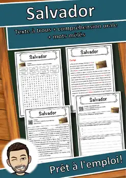
Salvador – Fiche de lecture : texte à trous, compréhension orale et mots mêlés
Salomonen – Fiche de lecture : texte à trous, compréhension orale et mots mêlés
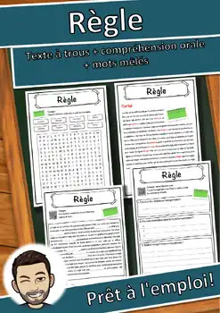
Règle – Fiche de lecture : texte à trous, compréhension orale et mots mêlés
Rokoko – Fiche de lecture : texte à trous, compréhension orale et mots mêlés
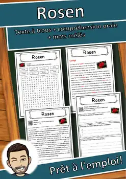
Rosen – Fiche de lecture : texte à trous, compréhension orale et mots mêlés
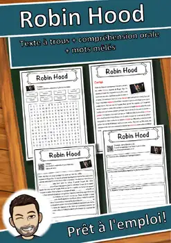
Robin Hood – Fiche de lecture : texte à trous, compréhension orale et mots mêlés
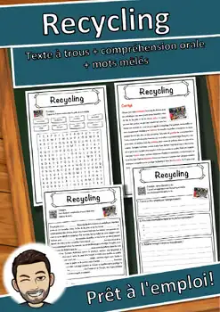
Recycling – Fiche de lecture : texte à trous, compréhension orale et mots mêlés
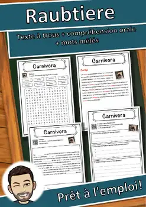
Raubtiere – Fiche de lecture : texte à trous, compréhension orale et mots mêlés
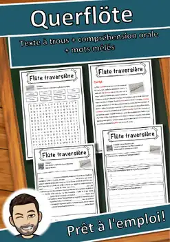
Querflöte – Fiche de lecture : texte à trous, compréhension orale et mots mêlés
Pilger – Fiche de lecture : texte à trous, compréhension orale et mots mêlés
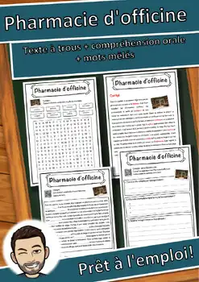
Pharmacie d'officine – Fiche de lecture : texte à trous et compréhension orale
Pfote – Fiche de lecture : texte à trous, compréhension orale et mots mêlés
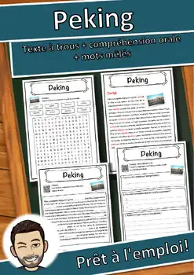
Peking – Fiche de lecture : texte à trous, compréhension orale et mots mêlés
Orthodoxe Kirche – Fiche de lecture : texte à trous et compréhension orale
Organisation – Fiche de lecture : texte à trous et compréhension orale
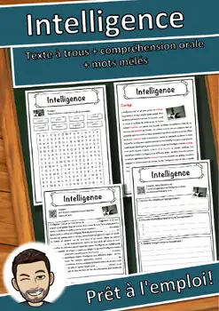
Intelligence – Fiche de lecture : texte à trous et compréhension orale
Programmieren – Fiche de lecture : texte à trous et compréhension orale
Printemps – Fiche de lecture : texte à trous, compréhension orale et mots mêlés
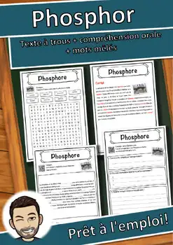
Phosphor – Fiche de lecture : texte à trous, compréhension orale et mots mêlés
Grève – Fiche de lecture : texte à trous, compréhension orale et mots mêlés
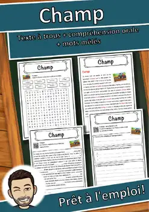
Champ – Fiche de lecture : texte à trous, compréhension orale et mots mêlés
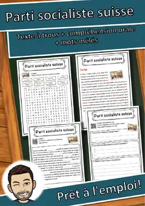
Parti socialiste suisse – Fiche texte à trous et compréhension orale
Osmanisches Reich – Fiche de lecture : texte à trous et compréhension orale
Oldenbourg – Fiche de lecture : texte à trous, compréhension orale et mots mêlés
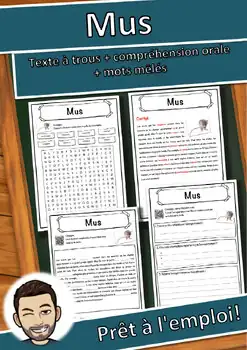
Mus – Fiche de lecture : texte à trous, compréhension orale et mots mêlés
Martin Luther – Fiche de lecture : texte à trous et compréhension orale
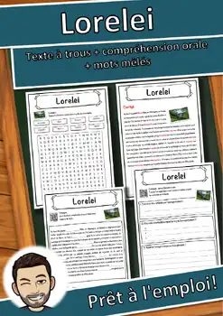
Lorelei – Compréhension de lecture : texte à trous, écoute et mots mêlés
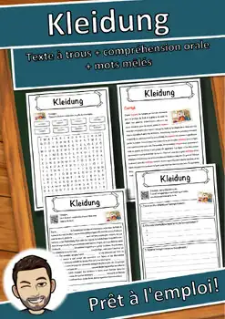
Kleidung – Compréhension de lecture : texte à trous, écoute et mots mêlés
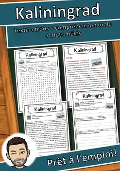
Kaliningrad – Compréhension de lecture : texte à trous, écoute et mots mêlés
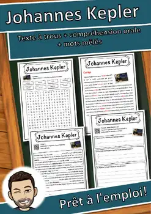
Johannes Kepler – Compréhension de lecture : texte à trous, écoute et mots mêlés
Jeanne d'Arc – Compréhension de lecture : texte à trous, écoute et mots mêlés
Japon – Compréhension de lecture : texte à trous, écoute et mots mêlés
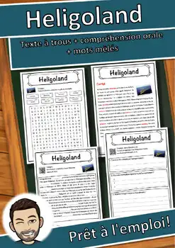
Heligoland – Compréhension de lecture : texte à trous, écoute et mots mêlés
Dépression – Compréhension de lecture : texte à trous, écoute et mots mêlés
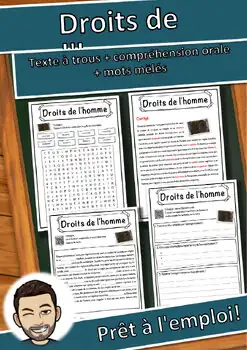
Droits de l'homme – Texte à trous, compréhension orale et mots mêlés
Cycle de l'eau – Compréhension de lecture : texte à trous, écoute et mots mêlés
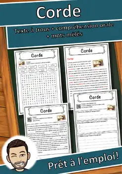
Corde – Compréhension de lecture : texte à trous, écoute et mots mêlés
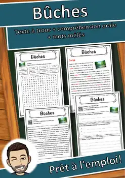
Bûches – Compréhension de lecture : texte à trous, écoute et mots mêlés
Bataille – Compréhension de lecture : texte à trous, écoute et mots mêlés
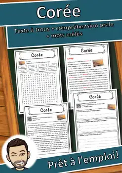
Corée – Compréhension de lecture : texte à trous, écoute et mots mêlés
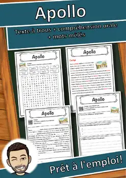
Apollo – Compréhension de lecture : texte à trous, écoute et mots mêlés
Heinrich Schliemann – Texte à trous, compréhension orale et mots mêlés
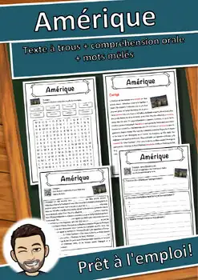
Amérique – Compréhension de lecture : texte à trous, écoute et mots mêlés
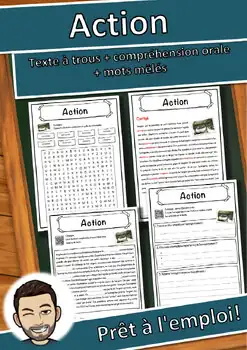
Action – Compréhension de lecture : texte à trous, écoute et mots mêlés
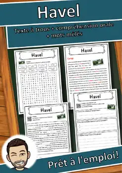
Havel – Compréhension de lecture : texte à trous, écoute et mots mêlés
François d'Assise – Texte à trous, compréhension orale et mots mêlés
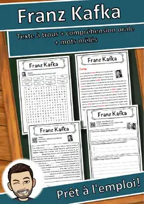
Franz Kafka – Compréhension de lecture : texte à trous, écoute et mots mêlés
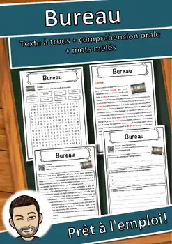
Bureau – Compréhension de lecture : texte à trous, écoute et mots mêlés
Aucune ressource trouvée – essaie un autre mot ou un autre filtre.